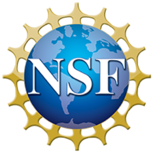

ADD TAGLINE HERE
Overview
It is increasingly urgent to understand and mitigate the impacts of space weather on human technology and society. One major risk is from geomagnetically induced currents (GICs) on power grid systems. At the most extreme end, a major geospace storm can result in GICs causing permanent damage to transformers and generators that cause large scale power grid blackouts. Making progress in mitigating the impact of GICs on power grids requires an integrative approach that brings together expertise across sectors and fields. KnowInnovation, supported by the National Science Foundation, National Aeronautics and Space Administration, and National Oceanic and Atmospheric Administration, is hosting a Geomagnetically Induced Currents and Power Systems Ideas Lab to generate creative strategies and new research collaborations aimed at improving understanding of GICs and their impact on human infrastructure.
The 5-day in-person Ideas Lab will take place September 19-23, 2022 at the Table Mountain Inn in Golden, Colorado. Travel funding will be supported through the Ideas Lab. Researchers and operational industry leaders are invited to apply. The Lab encourages expertise in the geomagnetic and geoelectric field, magnetospheric and ionospheric sciences, ground conductivity, power systems, and power grid operations.
The Geomagnetically Induced Currents and Power Systems Ideas Lab will bring together experts from a wide variety of fields to envision new projects related to GICs and power grids and to develop new research collaborations. Applicants (~30) who demonstrate a collaborative spirit and represent a variety of backgrounds and approaches will be selected to participate. Senior, mid-, and early career professionals are all welcome to apply. At the end of the lab, participants will have formed new collaborations around innovative ideas that integrate research and operations goals and needs. Opportunities for submission of project proposals from the sponsoring agencies (NSF, NASA, and NOAA) will be highlighted and participants will have the opportunity to interact with funding officials. Applicants must be willing to commit to active engagement for the entire duration of the Ideas Lab.
The Innovation Lab
An Innovation Lab is an intensive, interactive, and free-thinking workshop on a particular topic, involving up to thirty diverse participants. It aims to stimulate thinking in promising new research approaches and theories at the intersection of artificial intelligence and machine learning, biomedical and behavioral research, and ethics. Participants will be expected to engage constructively in dialogue with each other, the facilitators, and the Subject Guides to develop collaborative research proposals. Collaboration will be encouraged, especially by bringing diverse minds together to embrace this challenge.
The Innovation Lab will run over five days starting on Monday and concluding after final presentations on Friday. The approach of the Innovation Lab is not to discuss ideas that are already well developed but not yet published. Rather, the goal is to bring individuals from different disciplines together to interact and engage in free-thinking on first principles, to learn from one another and create an integrated vision for future research projects. It is expected that the sharing of these ideas would be encouraged within the Innovation Lab but their confidentiality would be respected outside the Innovation Lab. At the Lab, interdisciplinary teams will work together to ideate and develop a roadmap for how to tackle selected challenges in this field. Through the course of the five days, teams will form, pitch and refine plans (based on input from subject guides and other participants) for interdisciplinary pilot projects that advance scientific questions related to social and technical approaches to defining and implementing ethics across the ecosystem.
Who Should Apply
This Innovation Lab will bring together people expert in Magnetosphere-Ionosphere modeling, Ionosphere-ground interaction, Geoelectric field, Magnetometer instrumentation, Power systems research, and Power systems operations. It is anticipated that the interdisciplinary collaborations formed during these events will result in new peer-reviewed publications or prepare teams for submitting proposals for funding opportunities to further develop, refine, and test hypothesizes and develop original research project ideas.
Approximately 30 applicants will be selected to participate in the Innovation Lab on the basis of the interests, expertise, and other characteristics solicited in the application. Most participants are expected to be academic faculty, industry and government, researchers, from early to senior career stages. Original thinkers from outside academia (e.g., industry) or earlier career stages are also encouraged to apply. When selecting participants, consideration will be given to balance across a range of diverse disciplinary experience and expertise. All participants should be willing to engage in frank disclosure and assessment of ideas in a collegial and professional fashion. To facilitate open sharing, all meeting discussions will be considered a private communication and not to be shared outside of the meeting, unless approved by the contributor. NSF, NASA, and NOAA staff will review applications and select the final list of participants. All research-related application information will be kept confidential.
Why and How to Apply
If applying, please be prepared to answer questions about yourself, your work experience, your research focus, and why you are interested in and qualified for the Innovations Lab. Applications will be reviewed by a content expert team and NSF, NASA, NOAA staff. Research-related information will be kept confidential.
Application Deadline: July 15, 2022 5:00 PM ET
If you have questions or need additional information, please email our organizing team at jocelyn.tejeda@knowinnovation.com.
